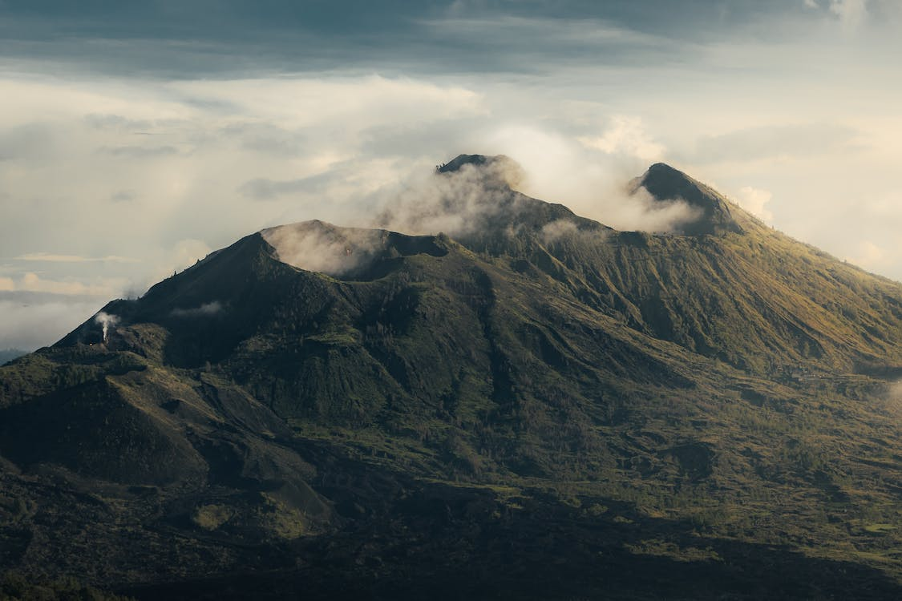

Welcome to my comprehensive website on volcanoes! Whether you're a curious individual fascinated by the raw power of these natural wonders or a traveler planning a thrilling adventure to witness the awe-inspiring beauty of a volcano up close, you've come to the right place. My goal is to provide you with a wealth of information about volcanoes, including different types, danger levels, and everything in between. Please note that this website does not serve as a comprehensive research resource for specific volcanoes. While we will mention certain volcanoes, it is crucial to conduct thorough research on any volcano you intend to visit. We strongly advise you to consult local websites that specialize in volcanoes for more detailed and up-to-date information relevant to your interests.